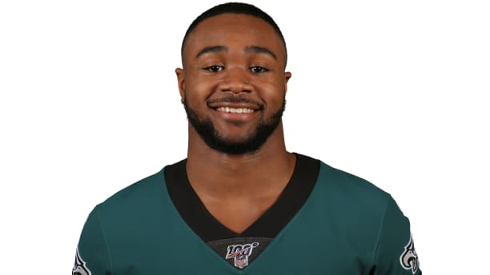

Miles Sanders
Biography:
In 2019, Miles Sanders was named to the PFWA All-Rookie Team after leading his class in all-purpose yards (1,641) and scrimmage yards (1,327), and producing the most rushing yards (818) in Eagles rookie history. Sanders, who totaled 13 plays of 20-plus yards, also ranked third among NFL RBs in scrimmage yards per touch (5.8), trailing only Austin Ekeler (6.9) and Christian McCaffrey (5.9) (min. 200 touches).